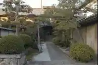
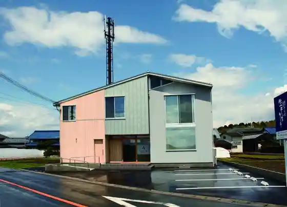
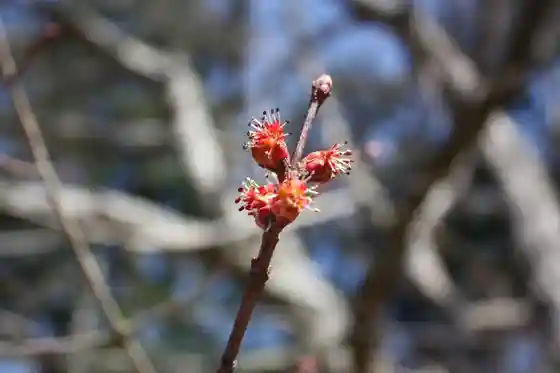

JR Notogawa Eki
Higashiomi, Shiga · 0570-00-2486 · Official / source link
Yoshikatsu Tera
Higashiomi, Shiga · 0748-42-5121 · Official / source link
Kita Shuzo
Higashiomi, Shiga · 0748-22-2505 · Official / source link

Workshop Shushu
Higashiomi, Shiga · 0748-20-3993 · Official / source link

Naka Sawa to Kita Hanazawa no Hana no Ki
Higashiomi, Shiga · Official / source link

Sekai Tako Museum Higashiomi Odako Hall
Higashiomi, Shiga · 0748-23-0081 · Official / source link
Omi Shonin Kyodo Kan
Higashiomi, Shiga · 0749-45-0002 · Official / source link
Uma no Tera (Sekiba Tera)
Higashiomi, Shiga · 0748-48-4823 · Official / source link
Omitetsudo Yoka City Eki
Higashiomi, Shiga · 0749-22-3303 · Official / source link
Autumn Leaves Park
Higashiomi, Shiga · 0748-29-3920 · Official / source link
O Sawa Shrine
Higashiomi, Shiga · 0748-29-3920 · Official / source link
Eigenji Onsen (Happu Baths)
Higashiomi, Shiga · 0748-27-1126 · Official / source link
Furu Sato Shokuhin
Higashiomi, Shiga · 0748-23-4362 · Official / source link
Suisha Museum
Higashiomi, Shiga · 0748-42-3000 · Official / source link
Yoka City Roiyaru Hotel
Higashiomi, Shiga · Official / source link
Kinryu Tera
Higashiomi, Shiga · 0748-29-0633 · Official / source link
Oshitate Shrine
Higashiomi, Shiga · 0749-45-2094 · Official / source link
Yukino Yama Rekishi Park
Higashiomi, Shiga · 0748-29-3920 · Official / source link
Gokasho Omi Shonin Residence (Fujii Hikoshiro Tei)
Higashiomi, Shiga · 0748-48-2602 · Official / source link
Eigenji Dam
Higashiomi, Shiga · 0748-29-3920 · Official / source link
Kita Ko Iwaya Juichi Men Kannon
Higashiomi, Shiga · Official / source link
Gokasho Kanko Center
Higashiomi, Shiga · 0748-48-6212 · Official / source link
Bonshaku Tera
Higashiomi, Shiga · 0748-55-2701 · Official / source link
Omi Shuzo
Higashiomi, Shiga · 0748-22-0001 · Official / source link
Kawabe Ikimo no Forest
Higashiomi, Shiga · 0748-20-5211 · Official / source link
Tsutsui Shrine Kiji Shi Hasshochi
Higashiomi, Shiga · 0748-48-2100 · Official / source link
Guzei Tera
Higashiomi, Shiga · 0748-48-2747 · Official / source link
Ichinobenoshiwa Oji Goryo
Higashiomi, Shiga · 0748-24-5662 · Official / source link
Ichigo Kari Sono (Aito Magarettosuteshon)
Higashiomi, Shiga · 0749-46-0370 · Official / source link
Gari Han Densho Kan
Higashiomi, Shiga · 0748-24-5574 · Official / source link
Eigenji Campground
Higashiomi, Shiga · 0748-29-0035 · Official / source link
Takagi Shrine
Higashiomi, Shiga · 0748-55-4882 · Official / source link
Sekito Tera
Higashiomi, Shiga · 0748-55-0213 · Official / source link
Farm Kitchin Yasai Hana
Higashiomi, Shiga · 0749-46-1455 · Official / source link
Hina Takumi Higashi Yuki Mizumi (Toko)
Higashiomi, Shiga · 0748-48-6288 · Official / source link
Iba no Suihen Keikan
Higashiomi, Shiga · 0748-42-0362 · Official / source link
Toyokuni Shrine
Higashiomi, Shiga · 0749-45-2688 · Official / source link
Kurefiiru Koto
Higashiomi, Shiga · 0749-45-3880 · Official / source link
Taro Bo Miya (Taro Bo Aga Shrine)
Higashiomi, Shiga · 0748-23-1341 · Official / source link
Fuse Shrine
Higashiomi, Shiga · 0748-24-5662 · Official / source link
Rogu Village
Higashiomi, Shiga · 0748-29-0205 · Official / source link
Yugengaisha Okamoto Konnyaku Honpo
Higashiomi, Shiga · 0748-27-0129 · Official / source link
Omitetsudo Goka So Eki
Higashiomi, Shiga · 0749-22-3303 · Official / source link
Enmei Park
Higashiomi, Shiga · 0748-29-3920 · Official / source link
Koto Aji Saki Kan
Higashiomi, Shiga · 0749-45-0335 · Official / source link
Roadside Station Okunaga Gen Tera Keiryu Village
Higashiomi, Shiga · 0748-29-0428 · Official / source link
Omitetsudo Taro Bo Miyamae Eki
Higashiomi, Shiga · 0749-22-3303 · Official / source link
Roadside Station Higashiomi Aito Magarettosuteshon
Higashiomi, Shiga · 0749-46-1110 · Official / source link
Kawaraya Zendera
Higashiomi, Shiga · 0748-22-1065 · Official / source link
Noji Kumiai Hojin Shiga Daigo Eino Kumiai
Higashiomi, Shiga · 0748-22-6383 · Official / source link
Yamabe Shrine Akahito Tera
Higashiomi, Shiga · 0748-29-3920 · Official / source link
Meicha Masukichi
Higashiomi, Shiga · 0748-22-0597 · Official / source link
Hibari Park
Higashiomi, Shiga · 0749-45-3363 · Official / source link
Nunobiki Yaki Kamamoto
Higashiomi, Shiga · Official / source link
Eigenji
Higashiomi, Shiga · 0748-27-0016 · Official / source link
Insetsu Tera
Higashiomi, Shiga · 0749-46-1285 · Official / source link
Notogawa Ariina
Higashiomi, Shiga · Official / source link
Miyama Campground
Higashiomi, Shiga · 0748-29-0205 · Official / source link
Omi Shonin Museum Nakaji Yu Nin Memorial Museum
Higashiomi, Shiga · 0748-48-7101 · Official / source link
Kiji Shi Museum
Higashiomi, Shiga · 050-5802-3313 · Official / source link
Yugengaisha Yamasan
Higashiomi, Shiga · Official / source link
Kyanioningu no Taoadobencha
Higashiomi, Shiga · Official / source link
Yukyu no Oka Gamo Akane Kofun Park
Higashiomi, Shiga · 0748-42-5011 · Official / source link
Higashiomi Sogo Sports Park
Higashiomi, Shiga · Official / source link
Shigaken Heiwa Kinen Kan
Higashiomi, Shiga · 0749-46-0300 · Official / source link
Manyo Forest Funaoka Yama
Higashiomi, Shiga · 0748-29-3920 · Official / source link
Inoko Yama Park
Higashiomi, Shiga · Official / source link
Higashiomi Puraza Mikata Yoshi
Higashiomi, Shiga · 0748-48-6678 · Official / source link
Notogawa Museum
Higashiomi, Shiga · 0748-42-6761 · Official / source link
Aikyo Forest
Higashiomi, Shiga · 0748-27-2009 · Official / source link
Noguchi Kenzo Memorial Museum
Higashiomi, Shiga · 0748-24-5574 · Official / source link
Koto Hemusuroido Village
Higashiomi, Shiga · Official / source link
Ikeda Ranch
Higashiomi, Shiga · 0748-27-1111 · Official / source link
Nishibori Eizaburo Kinen Tanken no Dendo
Higashiomi, Shiga · 0749-45-0011 · Official / source link
Gokasho Omi Shonin Residence (Soto Village Han Tei Nakae Jun Goro Tei)
Higashiomi, Shiga · 0748-48-3399 · Official / source link
Matsubara Oto Campground
Higashiomi, Shiga · 080-4028-3886 · Official / source link
Gokasho Kondo no Streetscape
Higashiomi, Shiga · 0748-29-3920 · Official / source link
Shaka Yama Kudara Tera
Higashiomi, Shiga · 0749-46-1036 · Official / source link
Omi Shonin Memorial Museum Hachinen Iori
Higashiomi, Shiga · Official / source link
Notogawa Suisha to Kanu Land (Iba Naiko)
Higashiomi, Shiga · 0748-42-3000 · Official / source link
Pateisurii Papie
Higashiomi, Shiga · 0748-23-2206 · Official / source link
Higashiomi Yakusho
Higashiomi, Shiga · 0748-24-1234 · Official / source link